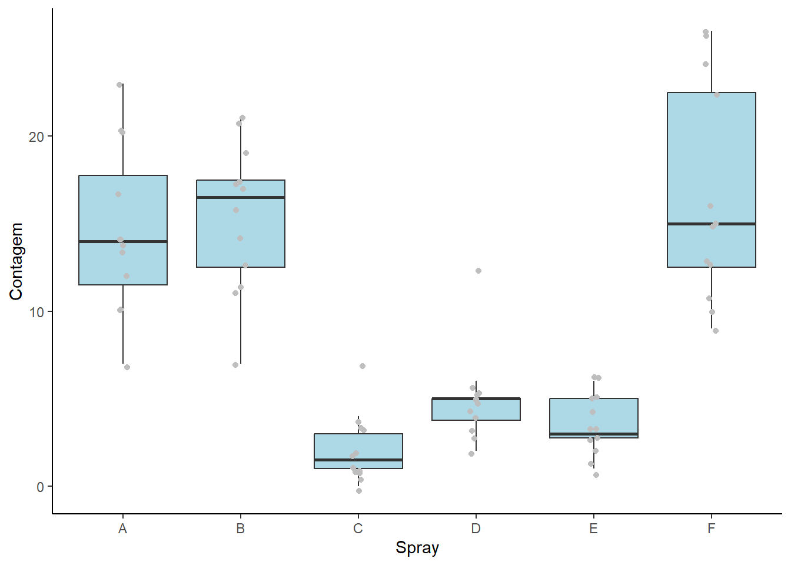
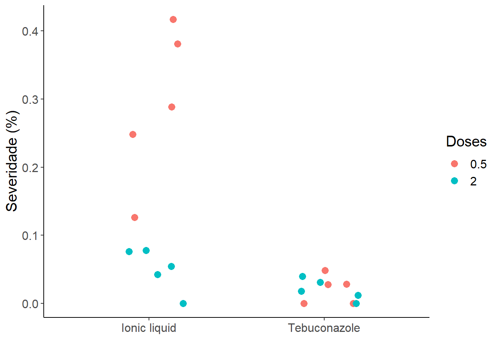

library(tidyverse) # Manipulação de dados
library(report) # possui uma função interessante para retornar o um resumo do resultado estatístico
library(emmeans)
library(multcomp)
library(multcompView)
library(DHARMa)
library(performance) # Testar as premissas
library(agricolae)Aula 6 e 7
Objetivo
Aprender a realizar Análise de Variância (ANOVA) e testar suas premissas, testes de comparações múltiplas, transformações de dados, testes não-paramétricos, Modelos Lineares Generalizados (GLMs) e Anova Fatorial.
Pacotes
Pacotes requeridos no decorrer do código.
Banco de dados: Dois grupos independentes
O banco de dados é constituído por dois tratamentos, controle e Mg e uma variável resposta ’comp’.
dados <- gsheet::gsheet2tbl(url = 'https://docs.google.com/spreadsheets/d/1bq2N19DcZdtax2fQW9OHSGMR0X2__Z9T/edit#gid=983033137')Gráfico
Visualizando os dados dos tratamentos por meio de Boxplot. Já é possível inferir que há diferença entre os tratamentos. Para ter certeza se essa diferença realmente existe, vamos seguir analisando.
dados |>
ggplot(aes(trat, comp)) +
geom_boxplot(fill = 'lightblue') +
labs(x = 'Treatments') +
theme_classic() +
labs(y = 'Comprimento')Teste t de Student
O teste t de Student é um teste de análise paramétrica e pode ser dividido em três tipos:
Teste t de amostras independentes: Quando se deseja comparar diferença entre médias de dois tratamentos;
Teste t de amostras dependentes ou pareadas: Quando se deseja comparar diferenças sobre um mesmo grupo antes e depois da aplicação do tratamento;
Teste t de uma amostra: Quando se deseja comparar a média do grupo com uma determinado valor conhecido.
Reestruturando banco de dados para o formato largo e realizando o teste t utilizando as funções pivot_wider() e t.test() dos pacotes tidyr e stats, respectivamente. Por fim, a função report(), do pacote report, retorna um resumo do resultado do teste. De maneira geral, o teste apresentou diferença significativa entre os dois tratamentos com p-valor < 0,05.
dados <- dados |>
pivot_wider(names_from = trat, values_from = comp)
teste <- t.test(dados$Mg2, dados$control)
report(teste)Effect sizes were labelled following Cohen's (1988) recommendations.
The Welch Two Sample t-test testing the difference between dados$Mg2 and
dados$control (mean of x = 10.52, mean of y = 15.68) suggests that the effect
is negative, statistically significant, and large (difference = -5.16, 95% CI
[-6.49, -3.83], t(17.35) = -8.15, p < .001; Cohen's d = -3.65, 95% CI [-5.12,
-2.14])Premissas
Antes de prosseguir com análise paramétrica dos dados, é necessário que os dados atendam as premissas de Normalidade dos Dados e Homogeneidade de Variâncias.
Normalidade
O teste de normalidade adotado aqui é o teste de Shapiro-Wilk. Existem outros testes de normalidade que podem ser utilizados. No entanto, esse teste é considerado o mais poderoso entre os testes. Pode ser feito da seguinte maneira:
shapiro.test(dados$Mg2)
Shapiro-Wilk normality test
data: dados$Mg2
W = 0.97269, p-value = 0.9146shapiro.test(dados$control)
Shapiro-Wilk normality test
data: dados$control
W = 0.93886, p-value = 0.5404Observe que a normalidade foi testada para cada tratamento e o p-valor > 0,05. Dessa maneira, não se rejeita a hipótese nula (H0), que os dados são normais.
Gráfico de normalidade
O código abaixo, apresenta graficamente a normalidade dos dados. Nesse caso, testamos a normalidade para o vetor de valores do tratamento Mg. A interpretação do gráfico é que quanto mais próximo os pontos estão da reta, ou, quanto menor esse erro dos pontos em relação a reta, mais próximo da normalidade estão os dados.
qqnorm(dados$Mg2)
qqline(dados$Mg2)
Homogeneidade de variâncias
A função var.test() do pacote stats pode ser utilizada para análise de variâncias. A função pede como argumento basicamente 2 vetores numéricos, cada um com os valores da variável resposta de cada um dos tratamentos.
var.test(dados$Mg2, dados$control)
F test to compare two variances
data: dados$Mg2 and dados$control
F = 1.4781, num df = 9, denom df = 9, p-value = 0.5698
alternative hypothesis: true ratio of variances is not equal to 1
95 percent confidence interval:
0.3671417 5.9508644
sample estimates:
ratio of variances
1.478111 Caso as variâncias não sejam homogêneas, pode-se acrescentar o argumento:
t.test(dados$Mg2, dados$control, var.equal = FALSE)
Welch Two Sample t-test
data: dados$Mg2 and dados$control
t = -8.1549, df = 17.354, p-value = 2.423e-07
alternative hypothesis: true difference in means is not equal to 0
95 percent confidence interval:
-6.490393 -3.825607
sample estimates:
mean of x mean of y
10.520 15.678 Acabamos de verificar as premissas de normalidade dos dados e homogeneidade das variâncias.
Banco de dados: Dois grupos com dependência
Os dados que trabalharemos agora são referentes a avaliações de intensidade de doença sem e com auxílio de escala diagramática. Nesse caso, os dados são coletados sobre o mesmo avaliador em momentos diferentes. No primeiro momento, o avaliador não faz uso de escala. No segundo momento, o avaliador faz uso de escala. O objetivo aqui é analisar se há ganho em acurácia e precisão quando se adota a escala comparado a quando não há. Nesse sentido, dizemos que existe dependência entre os dados e seguimos com teste t pareado.
dados2 <- gsheet::gsheet2tbl('https://docs.google.com/spreadsheets/d/1bq2N19DcZdtax2fQW9OHSGMR0X2__Z9T/edit#gid=1729131173')Gráfico
dados2 |>
ggplot(aes(assessment, acuracia)) +
geom_boxplot(fill = 'lightblue') +
labs(y = "Acurácia",
x = 'Avaliação') +
theme_classic() +
theme(text = element_text(size = 15)) Teste t pareado
Seguindo o mesmo raciocínio utilizado no banco de dados anterior, para este, também será ajustado para o formato largo antes de seguir com a análise.
Para realizar o teste entre grupos pareados (dependentes), basta acrescentar o argumento paired = TRUE dentro da função t.test().
dados2 <- dados2 |>
dplyr::select(rater, assessment, acuracia)
dados2 <- dados2 |>
pivot_wider(names_from = assessment, values_from = acuracia)
t.test(dados2$Unaided, dados2$Aided1, paired = TRUE)
Paired t-test
data: dados2$Unaided and dados2$Aided1
t = -4.4214, df = 9, p-value = 0.001668
alternative hypothesis: true mean difference is not equal to 0
95 percent confidence interval:
-0.3552353 -0.1147647
sample estimates:
mean difference
-0.235 O p-valor < 0,05, rejeita-se H0 e aceita-se a hipótese alternativa (Ha), ou seja, existe diferença significativa entre os grupos de médias ao nível de 5% de probabilidade, pelo teste t pareado. Agora, é preciso verificar as premissas antes de aceitar este resultado como verdade.
Premissas
Normalidade
shapiro.test(dados2$Unaided)
Shapiro-Wilk normality test
data: dados2$Unaided
W = 0.7748, p-value = 0.007155shapiro.test(dados2$Aided1)
Shapiro-Wilk normality test
data: dados2$Aided1
W = 0.92852, p-value = 0.4335Pelo menos um dos grupos não apresentou normalidade dos dados.
Homogeneidade de variâncias
var.test(dados2$Unaided, dados2$Aided1)
F test to compare two variances
data: dados2$Unaided and dados2$Aided1
F = 20.978, num df = 9, denom df = 9, p-value = 0.000106
alternative hypothesis: true ratio of variances is not equal to 1
95 percent confidence interval:
5.210754 84.459185
sample estimates:
ratio of variances
20.97847 As variâncias não podem ser consideradas homogêneas. P-valor > 0,05. Os dados foram submetidos a transformações e mesmo assim não atenderam as premissas. Nesse caso, para prosseguir com a análise dos dados é preciso partir para análise não paramétrica, que será abordada mais adiante.
No entanto, supondo que os dados são normais e apenas a premissa de homogeneidade de variâncias não foi atendida, pode-se seguir com a análise do teste t indicando o argumento var.equal = FALSE dentro da função t.test(). Esse teste é uma variação do teste t e é conhecido com teste t de Welch.
t.test(dados2$Unaided, dados2$Aided1, paired = TRUE, var.equal = FALSE)
Paired t-test
data: dados2$Unaided and dados2$Aided1
t = -4.4214, df = 9, p-value = 0.001668
alternative hypothesis: true mean difference is not equal to 0
95 percent confidence interval:
-0.3552353 -0.1147647
sample estimates:
mean difference
-0.235 Teste não-paramétrico
Seguindo com a análise do conjunto de dados anterior, adotar teste não-paramétrico é uma alternativa para seguir com as análises quando as premissas dos testes paramétricos não são atendidas.
Wilcoxon Signed-Rank
Esse teste é uma alternativa não-paramétrica para análise de dados pareados que não apresentam normalidade. Utilizando a função wilcox.test() e definindo o argumento paired = TRUE“.
wilcox.test(dados2$Aided1,
dados2$Unaided,
paired = TRUE)
Wilcoxon signed rank test with continuity correction
data: dados2$Aided1 and dados2$Unaided
V = 55, p-value = 0.005889
alternative hypothesis: true location shift is not equal to 0O p-valor < 0,05, indicando que existe diferença entre os tratamentos pelo referido teste.
Banco de dados: Três ou mais grupos
Agora vamos seguir para analisar dados cujas comparações são entre três ou mais grupos. Os dados importados abaixo são referentes a um ensaio conduzido num Delineamento experimental Inteiramente Casualizado (DIC), com 5 tratamentos (espécies) e 6 repetições com apenas uma variável resposta.
dados3 <- gsheet::gsheet2tbl('https://docs.google.com/spreadsheets/d/1bq2N19DcZdtax2fQW9OHSGMR0X2__Z9T/edit#gid=959387827')Gráfico
dados3 |>
ggplot(aes(especie, tcm)) +
geom_boxplot(fill = 'grey') +
geom_jitter(width = 0.1, size = 2.5, alpha = 0.7, color = 'darkred') +
labs(x = 'Espécies') +
theme_classic()ANOVA
A ANOVA (Análise de Variância), identifica a existência de pelo menos uma média com diferença significativa entre as demais. No entanto, ela por si só, não indica quais médias são diferentes entre si. A hipótese testada é que as médias são iguais. O quadro de ANOVA retorna o p-valor e este sendo menor que o nível de significancia adotado pelo pesquisador, rejeita-se a H0 e aceita-se a Ha. Para realizar essa análise no R, pode-se seguir com as funções anova() e lm() do pacote stats. Para entender melhor sobre como utilizar essas funções e seus argumentos, busque ajuda digitando no console ?NOME DA FUNÇÃO.
anova(lm(tcm ~ especie, data = dados3))Analysis of Variance Table
Response: tcm
Df Sum Sq Mean Sq F value Pr(>F)
especie 4 1.46958 0.36739 19.629 2.028e-07 ***
Residuals 25 0.46792 0.01872
---
Signif. codes: 0 '***' 0.001 '**' 0.01 '*' 0.05 '.' 0.1 ' ' 1O resultado do Quadro da ANOVA indicou que existe pelo menos uma média, entre os tratamentos, que se diferem entre si ao nível de 5% de significância.
Teste de comparações múltiplas
Utilizando a função emmeans() e cld() para separar os grupos de médias estatisticamente diferentes entre si.
m1 <- lm(tcm ~ especie, data = dados3)
medias1 <- emmeans(m1, ~ especie)
cld(medias1, Letters = letters) especie emmean SE df lower.CL upper.CL .group
Fgra 0.912 0.0559 25 0.797 1.03 a
Faus 1.237 0.0559 25 1.122 1.35 b
Fcor 1.322 0.0559 25 1.207 1.44 b
Fmer 1.427 0.0559 25 1.312 1.54 bc
Fasi 1.572 0.0559 25 1.457 1.69 c
Confidence level used: 0.95
P value adjustment: tukey method for comparing a family of 5 estimates
significance level used: alpha = 0.05
NOTE: If two or more means share the same grouping symbol,
then we cannot show them to be different.
But we also did not show them to be the same. Premissas: normalidades dos resíduos
A seguir, três maneiras de verificar as premissas.
- Primeira maneira: Utilizando as funções
shapiro.test()ebartlett.test().
Os resíduos são normais e as variâncias são homeogêneas.
shapiro.test(m1$residuals)
Shapiro-Wilk normality test
data: m1$residuals
W = 0.9821, p-value = 0.8782bartlett.test(tcm ~ especie, data = dados3)
Bartlett test of homogeneity of variances
data: tcm by especie
Bartlett's K-squared = 4.4367, df = 4, p-value = 0.3501- Segunda maneira: Realizando o plot do resultado da função
simulateResiduals()do modelo ajustado, nesse caso, ‘m1’. Os resíduos são normais e as variências homogêneas.
plot(simulateResiduals(m1))
- Terceira maneira: Utilizando aa fuções
check_normality()echeck_heteroscedasticity()do pacote Performance, para verificar a normalidade dos resíduos e homeogeneidade das variâncias, respectivamente.
check_normality(m1)OK: residuals appear as normally distributed (p = 0.878).check_heteroscedasticity(m1)OK: Error variance appears to be homoscedastic (p = 0.880).plot <- check_model(m1)Banco de dados
O banco de dados contêm 6 tratamentos com 12 repetições cada.
insects <- InsectSprays
insects |> count(spray) spray n
1 A 12
2 B 12
3 C 12
4 D 12
5 E 12
6 F 12Gráfico
Apenas com base no gráfico abaixo, podemos inferir que existe tratamentos que diferem entre si sobre a variável contagem. Vamos realizar os teste estatísticos para ter certeza disso.
insects |>
ggplot(aes(x = spray, y = count)) +
geom_boxplot(outlier.colour = NA, fill = 'lightblue') +
geom_jitter(width = 0.05, color = 'gray') +
labs(x = 'Spray', y = 'Contagem') +
theme_classic()
ANOVA
Esses dados são referentes a um ensaio realizado em Delineamento Inteiramente Casualizado (DIC). Logo, o ajuste do modelo, para rodar a ANOVA, é simples. Como apresentado no código abaixo:
ml <- lm(count ~ spray,
data = insects)
anova(ml)Analysis of Variance Table
Response: count
Df Sum Sq Mean Sq F value Pr(>F)
spray 5 2668.8 533.77 34.702 < 2.2e-16 ***
Residuals 66 1015.2 15.38
---
Signif. codes: 0 '***' 0.001 '**' 0.01 '*' 0.05 '.' 0.1 ' ' 1O p-valor < 0,05, ou seja, existe pelo menos um par de médias que se diferem entre si, pelo teste F, ao nível de 5% de probabilidade.
Gráfico: Histograma dos resíduos
Com base no gráfico abaixo, é perceptível que os resíduos têm uma distribuição normal. Seguimos agora com um teste de normalidade para confirmar essa ideia.
insects |>
ggplot(aes(x = ml$residuals)) +
geom_histogram(bins = 10, color = 'white', fill = 'lightblue') +
labs(x = 'Resíduos') +
theme_classic()shapiro.test(ml$residuals)
Shapiro-Wilk normality test
data: ml$residuals
W = 0.96006, p-value = 0.02226O teste indica não normalidade dos dados, apesar de visualmente o histograma apresentar uma certa normalidade. Vale lembrar que a homogeneidade das variâncias é mais importanque que a normalidade dos resíduos.
bartlett.test(count ~ spray,
data = insects)
Bartlett test of homogeneity of variances
data: count by spray
Bartlett's K-squared = 25.96, df = 5, p-value = 9.085e-05De acordo com o teste de Bartlett os dados possuem variâncias heterogêneas. Resumindo, não é possível aplicar estatística paramétrica. Parte-se agora para transformação de dados para verificar se é possível trabalhar com estatística paramétrica com esses dados.
Quando os dados são de contagem, normalmente a transformação com base na raiz quadrada é interessante.
Alternativa 1: transformação
Transformação por raiz quadrada
insects <- insects |>
mutate(count2 = sqrt(count))
insects |>
ggplot(aes(x = spray, y = count2)) +
geom_boxplot(fill = 'lightblue') +
theme_classic() +
labs(y = 'Count \n (transformação pela raiz quadrada)', x = 'Spray')Seguimos agora para testar as premissas utilizando os dados transformados.
ml <- lm(count2 ~ spray,
data = insects)
anova(ml)Analysis of Variance Table
Response: count2
Df Sum Sq Mean Sq F value Pr(>F)
spray 5 88.438 17.6876 44.799 < 2.2e-16 ***
Residuals 66 26.058 0.3948
---
Signif. codes: 0 '***' 0.001 '**' 0.01 '*' 0.05 '.' 0.1 ' ' 1# Uma maneira de testear as premissas
shapiro.test(ml$residuals)
Shapiro-Wilk normality test
data: ml$residuals
W = 0.98721, p-value = 0.6814bartlett.test(count2 ~ spray,
data = insects)
Bartlett test of homogeneity of variances
data: count2 by spray
Bartlett's K-squared = 3.7525, df = 5, p-value = 0.5856# Outra maneira de testar as premissas
check_normality(ml)OK: residuals appear as normally distributed (p = 0.681).check_heteroscedasticity(ml)OK: Error variance appears to be homoscedastic (p = 0.854).Premissas atendidas com a transformação por raiz quadrada. Partimos para testes de comparações múltiplas:
medias1 <- emmeans(ml, ~ spray)
cld(medias1, Letters = letters) spray emmean SE df lower.CL upper.CL .group
C 1.24 0.181 66 0.883 1.61 a
E 1.81 0.181 66 1.447 2.17 ab
D 2.16 0.181 66 1.802 2.53 b
A 3.76 0.181 66 3.399 4.12 c
B 3.88 0.181 66 3.514 4.24 c
F 4.02 0.181 66 3.656 4.38 c
Confidence level used: 0.95
P value adjustment: tukey method for comparing a family of 6 estimates
significance level used: alpha = 0.05
NOTE: If two or more means share the same grouping symbol,
then we cannot show them to be different.
But we also did not show them to be the same. Concluimos que os fungicidas C e E são os mais eficazes.
Transformação Box-Cox
Outra maneira de transformar os dados é por meio da transformação de Box-Cox. Para isso, primeiro é preciso encontrar o lambda.
library(MASS)
b <- boxcox(lm(insects$count + 0.1 ~ 1))
lambda <- b$x[which.max(b$y)]
lambda[1] 0.4242424Criando a variável transformada conforme a equação:
- y(lambda) = (x^lambda - 1) / lambda.
insects$count3 <- (insects$count ^ lambda - 1) / lambdaAlternativa 2: Teste não paramétrico
Caso, após as transformações, os dados ainda não atendam as premissas de normalidade e homogeneidade de variâncias, podemos seguir com análise não-paramétrica. Testes não-paramétricos não consideram as premissas antes testadas e permitem que prossigamos com a análise dos dados.
O teste de Kruskal-Wallis é um teste não paramétrico similar ao teste F. Portanto, o teste não separa os grupos. Para isso, após o teste apresentar que há pelo menos um par de tratamentos que se diferem estatisticamente entre si, é necessário adotar um teste Post Hoc, para comparações múltiplas. A função kruskal.test(), do pacote stats, realiza essa primeira parte. A função kruskal() do pacote agricolae, realiza essas duas etapas de uma vez. Caso queira, pode-se realizar testes Post Hoc como o teste de Dunn, teste de Nemenyi ou teste de Conover.
kruskal.test(count ~ spray, data = insects)
Kruskal-Wallis rank sum test
data: count by spray
Kruskal-Wallis chi-squared = 54.691, df = 5, p-value = 1.511e-10m3 <- kruskal(insects$count, insects$spray, group = T)
m3$groups insects$count groups
F 55.62500 a
B 54.83333 a
A 52.16667 a
D 25.58333 b
E 19.33333 bc
C 11.45833 cAlternativa 3: Modelo linear generalizado (GLMs)
Outra alternativa que se pode adotar, para análisar dados que não atenderam as premissas, é realizar ajustes de modelos não lineares, que permite indicar a qual distribuição os dados pertencem. A função glm() do pacote stats, ajusta esses modelos.
m4 <- glm(count ~ spray,
family = poisson, # poisson por ser dados de contagem
data = insects)
summary(m4)
Call:
glm(formula = count ~ spray, family = poisson, data = insects)
Coefficients:
Estimate Std. Error z value Pr(>|z|)
(Intercept) 2.67415 0.07581 35.274 < 2e-16 ***
sprayB 0.05588 0.10574 0.528 0.597
sprayC -1.94018 0.21389 -9.071 < 2e-16 ***
sprayD -1.08152 0.15065 -7.179 7.03e-13 ***
sprayE -1.42139 0.17192 -8.268 < 2e-16 ***
sprayF 0.13926 0.10367 1.343 0.179
---
Signif. codes: 0 '***' 0.001 '**' 0.01 '*' 0.05 '.' 0.1 ' ' 1
(Dispersion parameter for poisson family taken to be 1)
Null deviance: 409.041 on 71 degrees of freedom
Residual deviance: 98.329 on 66 degrees of freedom
AIC: 376.59
Number of Fisher Scoring iterations: 5library(car)
Anova(m4)Analysis of Deviance Table (Type II tests)
Response: count
LR Chisq Df Pr(>Chisq)
spray 310.71 5 < 2.2e-16 ***
---
Signif. codes: 0 '***' 0.001 '**' 0.01 '*' 0.05 '.' 0.1 ' ' 1P-valor < 0,05, um indicativo que existe pelo menos uma média com diferença significativa. Agora para separar os grupos seguimos com testes de comparações múltiplas.
medias4 <- emmeans(m4, ~ spray,
type = "response")
cld(medias4, Letters = letters) spray rate SE df asymp.LCL asymp.UCL .group
C 2.08 0.417 Inf 1.41 3.08 a
E 3.50 0.540 Inf 2.59 4.74 ab
D 4.92 0.640 Inf 3.81 6.35 b
A 14.50 1.099 Inf 12.50 16.82 c
B 15.33 1.130 Inf 13.27 17.72 c
F 16.67 1.179 Inf 14.51 19.14 c
Confidence level used: 0.95
Intervals are back-transformed from the log scale
P value adjustment: tukey method for comparing a family of 6 estimates
Tests are performed on the log scale
significance level used: alpha = 0.05
NOTE: If two or more means share the same grouping symbol,
then we cannot show them to be different.
But we also did not show them to be the same. Anova Fatorial
Partimos agora para análise de dados organizados em esquema fatorial.
Banco de dados
Dados referentes a um ensaio realizado em Delineamento Inteiramente Casualizado (DIC) em esquema fatorial 2x2. O primeiro fator, qualitativo, composto pelos níveis: Líquido iônico e Tebuconazol. O segundo fator, quantitativo, composto pelos níveis: 0,5 e 2. Avaliou-se o efeito dos tratamentos sobre a intensidade de uma doença qualquer.
dados <- gsheet::gsheet2tbl("https://docs.google.com/spreadsheets/d/1bq2N19DcZdtax2fQW9OHSGMR0X2__Z9T/edit#gid=2023059672")Gráfico
Visualmente, é perceptível uma diferença do tratamento líquido iônico na concentração de 0,2 com os outros tratamentos.
dados |>
ggplot(aes(factor(dose), x = treat, y = severity, color = factor(dose))) +
geom_jitter(size = 3, width = 0.2) +
theme_classic() +
labs(y = 'Severidade (%)', x = ' ', color = 'Doses') +
theme(text = element_text(size = 15))
ANOVA e teste de comparações múltiplas
Vamos rodar os testes para verificar se realmente existe essa diferença detectada visualmente no gráfico. Nesse caso, ajustamos o modelo como se segue:
mf <- lm(severity ~ treat*factor(dose), data = dados )
anova(mf)Analysis of Variance Table
Response: severity
Df Sum Sq Mean Sq F value Pr(>F)
treat 1 0.113232 0.113232 30.358 4.754e-05 ***
factor(dose) 1 0.073683 0.073683 19.755 0.0004077 ***
treat:factor(dose) 1 0.072739 0.072739 19.502 0.0004326 ***
Residuals 16 0.059678 0.003730
---
Signif. codes: 0 '***' 0.001 '**' 0.01 '*' 0.05 '.' 0.1 ' ' 1plot(simulateResiduals(mf))
mf_medias1 <- cld(emmeans(mf, ~ treat | dose))
mf_medias2 <- cld(emmeans(mf, ~ dose | treat))
mf_medias1; mf_medias2dose = 0.5:
treat emmean SE df lower.CL upper.CL .group
Tebuconazole 0.0210 0.0273 16 -0.03690 0.0789 1
Ionic liquid 0.2921 0.0273 16 0.23420 0.3500 2
dose = 2.0:
treat emmean SE df lower.CL upper.CL .group
Tebuconazole 0.0202 0.0273 16 -0.03768 0.0781 1
Ionic liquid 0.0501 0.0273 16 -0.00781 0.1080 1
Confidence level used: 0.95
significance level used: alpha = 0.05
NOTE: If two or more means share the same grouping symbol,
then we cannot show them to be different.
But we also did not show them to be the same. treat = Ionic liquid:
dose emmean SE df lower.CL upper.CL .group
2.0 0.0501 0.0273 16 -0.00781 0.1080 1
0.5 0.2921 0.0273 16 0.23420 0.3500 2
treat = Tebuconazole:
dose emmean SE df lower.CL upper.CL .group
2.0 0.0202 0.0273 16 -0.03768 0.0781 1
0.5 0.0210 0.0273 16 -0.03690 0.0789 1
Confidence level used: 0.95
significance level used: alpha = 0.05
NOTE: If two or more means share the same grouping symbol,
then we cannot show them to be different.
But we also did not show them to be the same. Como visualizado no gráfico de dispersão, existe diferença entre os níveis de dose dentro do fator líquido iônico e diferença entre os níveis qualitativos dentro do nível 0,5 do fator dose. Concluindo que a aplicação do líquido iônico é equivalente a aplicação de fungicida tebuconazol quando aplicado na dose 2, sobre a redução da severidade da doença.